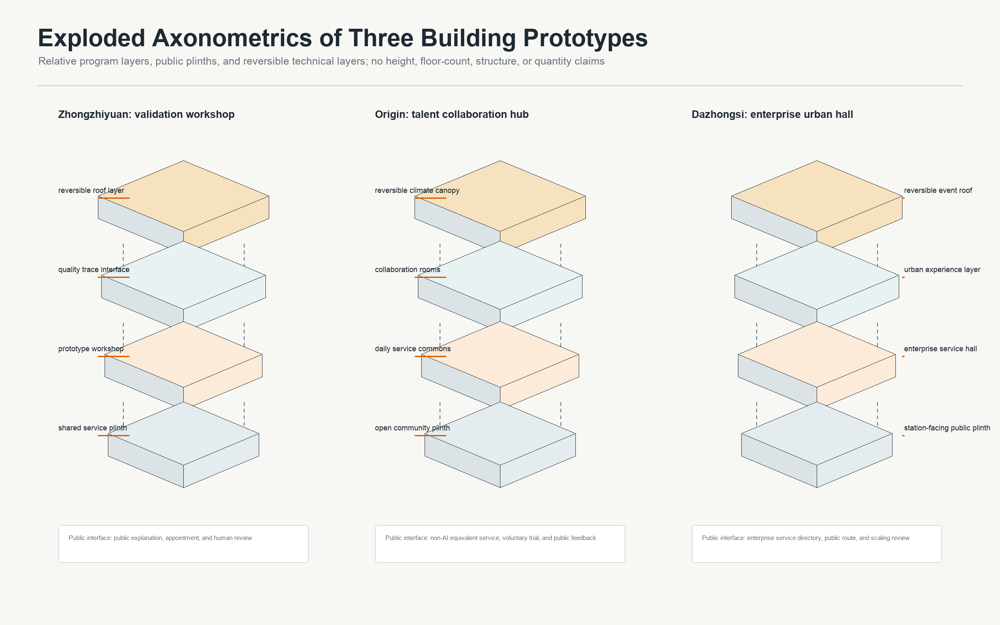
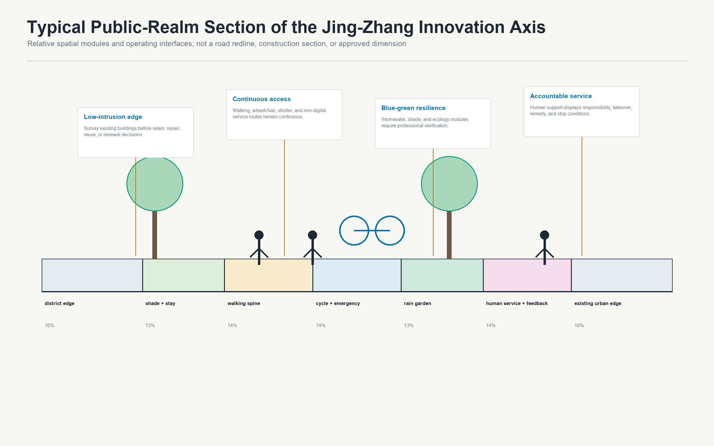

Zhongzhiyuan
Service prototype and quality validationR&D workshop, safety and interoperability sandbox, open quality trace courtyard
A three-area validation network for everyday AI talent life


R&D workshop, safety and interoperability sandbox, open quality trace courtyard
Near-campus collaboration, voluntary trial and exit, open-source contribution ribbon
Enterprise interface, urban experience hall, adoption review desk


Default is no scaling: missing accountability, failed non-AI equivalence, unresolved major incidents, or unavailable remedy require holding, rollback, or exit.
QGIS is open with read-only submission layers. PlanX ran syntax, centrality, service-area, walkability, and green-access diagnostics on an EPSG:4548 agent_generated_design network. Results are design QA only, not existing conditions or official performance.



Recommended Strategy C: Living Service Acceptance Rail plus a Blue-Green Resilience Network. Scores are not official review scores.